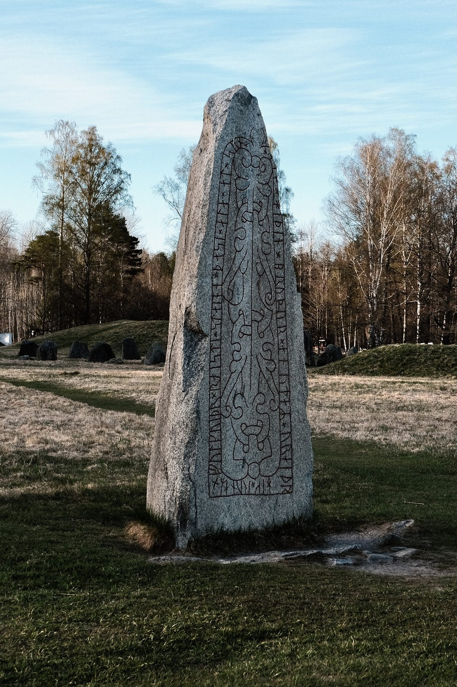
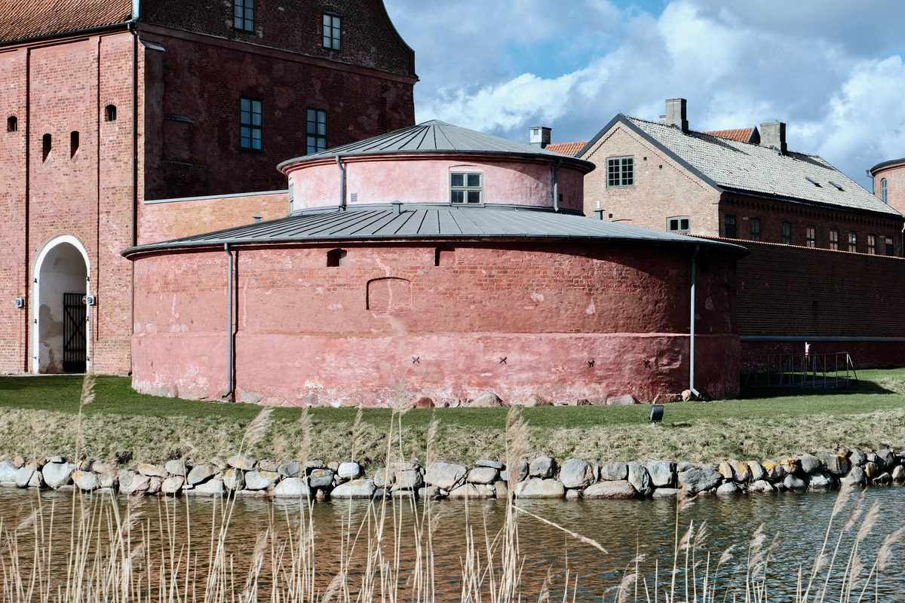

Series
Photographic series
Curated groups of photographs — a single thread of subject or place followed across the journal, apart from the stories.

Runestones & Carvings
Sweden’s memory cut into stone — rune inscriptions and the Sigurd carving at Ramsund, gathered from across the journal’s ancient sites.
View series
Castles & Fortresses
Walls, moats, and towers — Landskrona Slott, Glimmingehus, and Kärnan across Sweden’s fortified past.
View series